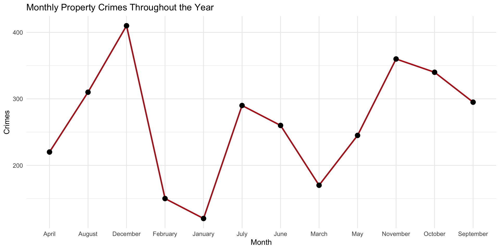
Data Visualization with ggplot2
In the prior chapters we have worked on obtaining an open-source data object, tidying it, and constructing variables. Now, we want to use those data to visualize the information. Data visualization transforms raw numbers into meaningful visual patterns that humans can interpret quickly.
Visualization helps analysts:
- Detect trends over time
- Compare categories
- Examine distributions
- Explore relationships between variables
- Identify outliers and anomalies
- Communicate findings effectively
Without visualization, important insights can remain hidden inside tables of data. Furthermore, the visual display of information reaches a broader audience than tabular display.
For example, consider the following table:
| Month | Property Crimes |
|---|---|
| January | 120 |
| February | 150 |
| March | 170 |
| April | 220 |
| May | 245 |
| June | 260 |
| July | 290 |
| August | 310 |
| September | 295 |
| October | 340 |
| November | 360 |
| December | 410 |
The table provides information (property crime each month), but a visualization makes patterns much easier to recognize immediately.
For example, a line graph would quickly reveal: - overall growth throughout the year - periods of rapid increase - slight slowdowns or dips - seasonal patterns - long-term trends
You can see these if you look through the table, but the visualization of the data makes them easier to see:
Visualization improves comprehension by allowing analysts to identify relationships and patterns that may not be obvious in raw numerical tables alone.
Principles of Effective Visualization
Before we get started with creating visual displays, we should think about what properties are desirable. Good visualizations are: clear, accurate, simple, and focused on insight. The reader (viewer?) should be able to look at the visualization and make sense of it without being led astray by too many colors, misleading axes, cluttered labels, unnecessary 3D effects, or overcomplicated graphics.
Design Principles
Here are several design principles to keep in mind when creating visualizations:
- Simplicity - Remove unnecessary elements
- Readability - Labels and titles should be easy to understand
- Appropriate Chart Selection - Use the correct chart for the question being asked
- Color with Purpose - Colors should highlight meaning, not distract
For an excellent review of visualization (with some really great examples), check out Kieran Healy’s Look at Data chapter of his Data Visualization: A Practical Introduction book.
What is ggplot2?
ggplot2 is a data visualization package in R based on the “Grammar of Graphics”, a framework for building data visualizations by combining independent visual components together in layers. Rather than treating each chart type as a completely separate object, the Grammar of Graphics views all graphics as combinations of:
- data - mappings - geometric shapes - scales - coordinate systems - visual themes
This framework was originally developed by statistician Leland Wilkinson and later implemented in R through the ggplot2 package by Hadley Wickham.
The name ggplot2 literally means: - gg = Grammar of Graphics - plot2 = second version of the plotting system
Traditional graphing systems often require users to memorize separate commands for each chart type. In contrast, ggplot2 uses a consistent structure for nearly every visualization. This means that once you learn the grammar, you can build many different types of graphics while only changing specific layers.
The utility might not be immediately obvious, but as we start building visualizations, it will become more clear (hang with me on this one!) This layered structure makes visualization more logical, flexible, easier to customize, and easier to interpret.
Key Components
Every ggplot2 plot has three key components:
- data
- A set of aesthetic mappings between variables in the data and visual properties
- At least one layer which describes how to render each observation, created with a geom function
Here’s a simple example:
# define the data
crime_dat <- data.frame(
month = c("January", "February", "March", "April",
"May", "June", "July", "August",
"September", "October", "November", "December"),
crimes = c(120, 150, 170, 220,
245, 260, 290, 310,
295, 340, 360, 410)
)
# plot it
ggplot( crime_dat,
aes( x = crimes, y = month ) ) +
geom_point()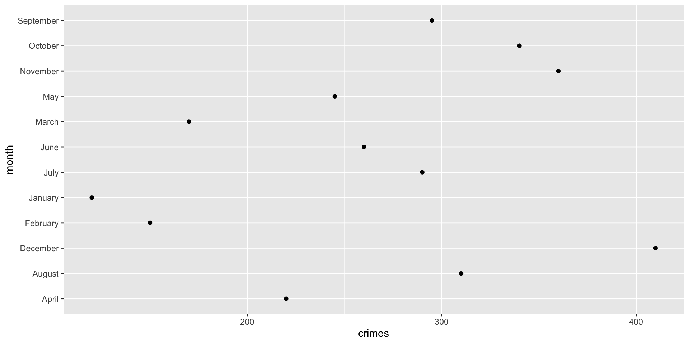
This produces a scatterplot defined by:
- Data:
crime_dat - Aesthetic mapping: number of crimes,
crimes, mapped to the x position, and time,month, mapped to the y position - Layer: points
The dataset contains the variables that will be visualized, the aesthetic mapping determines how variables are connected to visual properties, and layer is how the information is displayed.
Run this code and think about what is happening:
ggplot( data = crime_dat,
mapping = aes( x = crimes, y = month ) )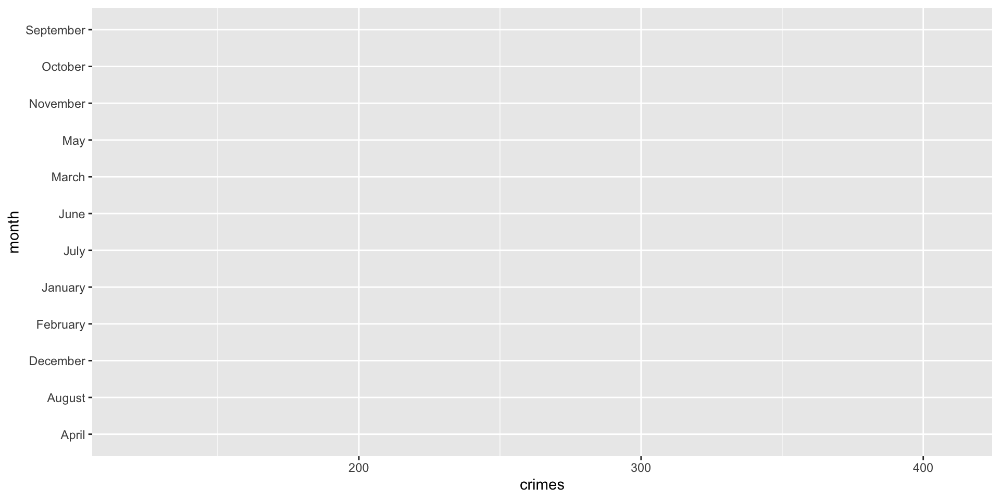
Why are there no dots? Let’s think about what we did. We have the data and we have the aesthetic mapping, but we do not have the layer. We add the layer with the + geom_point() line (hence the inclusion of the + operator)
This basic point is key to understating the power of the ggplot2 for visualization. Instead of creating an entire chart with one complicated command, we start by stipulating our data and mapping the variables to their positions, then we add layers, then we customize the appearance. This is the basic setup that allows us to develop very sophisticated visual displays of information.
Crimes in Phoenix
Recall from the prior chapters that we spent some time tidying the phx_crime object in DWVpack and that data object is called tidy_phx_crime. We can now use those tidied data (tidier data?) to create a visualization. Specifically, we want to recreate this plot:
Now, think for a bit about what we need. Effectively, we want a data object to plot that has a column for months and number of crimes. We can use dplyr to create the data object. Let’s start with using the arrange() and group_by() functions to sort the data by “month” and then we will group them to create a summary measure that is the count of crimes:
crime_monthly <- tidy_phx_crime |>
select( month ) |>
arrange( month ) |>
group_by( month ) |>
summarize( crimes = n() , .groups = "drop" )Now, take a look at the data using View( crime_monthly ) (it will pop up a separate window pane). Let’s walk through this to see what we are doing:
-
crime_monthly <- tidy_phx_crimesays to create a new object calledcrime_monthlyfrom thetidy_phx_crimeobject. We create a new object since that will be the data just for this plot. -
select( month )takes just themonthvariable. -
arrange( month )sorts the data bymonth. Again, look at how the data are sorted using theView( crime_monthly )command. -
group_by( month )groups the data bymonth. -
summarize( crimes = n() , .groups = "drop" )creates a new column calledcrimeswhich is a count for each month (because they data are grouped that way). The.groups = "drop"command just tells R to remove the grouping from the object after it is done creating the new column.
Now that we have our data object, we can start building our plot. As we stated above, every ggplot2 plot has three key components: data (which we just created), a set of aesthetic mappings between variables in the data and visual properties, and at least one layer which describes how to render each observation, created with a geom function.
Let’s set up our mapping by making the x-axis the month and the y-axis the count of crimes:
ggplot( crime_monthly, aes( x = month, y = crimes ) )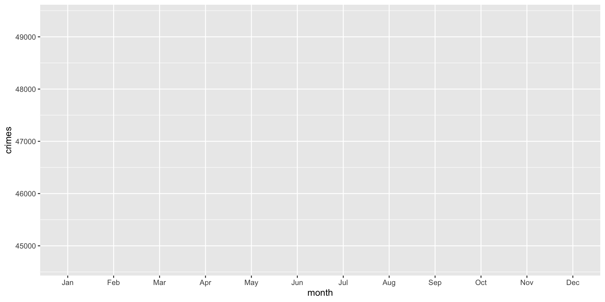
Note that the plot is blank because we have not set up the third piece, the layer.
To set up a layer of points, we can use the geom_point() function:
ggplot( crime_monthly, aes( x = month, y = crimes ) ) +
geom_point()
The points are helpful, but adding a line here would help a great deal. We can also add a line using the geom_line() function. Note that we are just adding another layer:
ggplot( crime_monthly, aes( x = month, y = crimes ) ) +
geom_point() +
geom_line()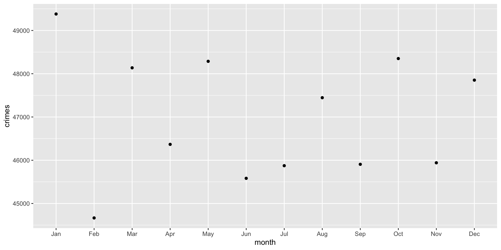
Ok, that didn’t work and we got a warning.
We got the warning because geom_line() connects observations together in order. That is, we have a line that connects January to February and so on. To do that, ggplot must know which observations belong to the same line. This is determined by the group = aesthetic. The problem is ggplot is assuming that each month is its own group, which prevents a continuous line from being drawn. We need to tell ggplot that there is only a single group and that the line should connect the dots. This is done using group = 1:
ggplot( crime_monthly, aes( x = month, y = crimes, group = 1 ) ) +
geom_point() +
geom_line()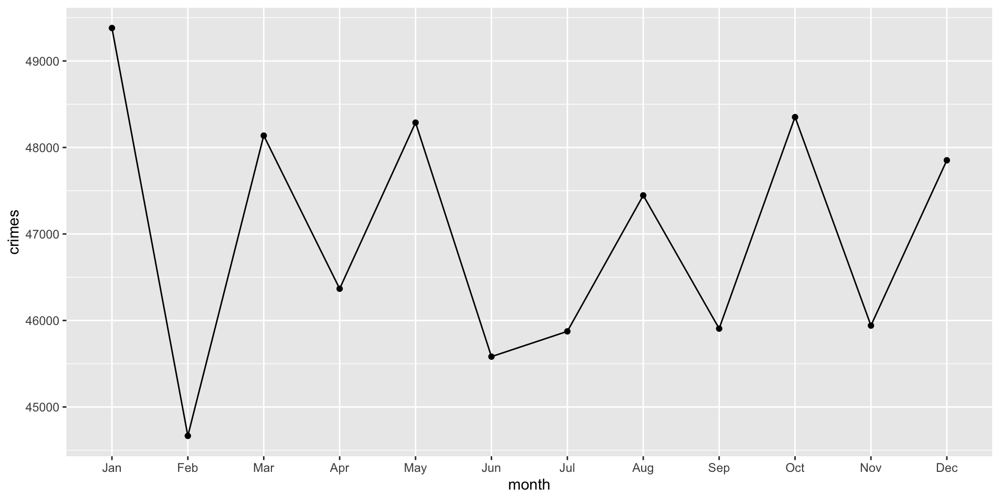
Think about what this plot shows. It is the count of crimes per month in Phoenix across all years. What are some issues with the plot? Well to name a few: there is no title, the axes are not well labeled, we might want to separate crimes by years…
A Better Plot: Crimes by Year
Ok, let’s now build a plot for crimes by year.
Remember the first step: think about how the data should be structured. Effectively, we want a data object to plot that has a column for months and number of crimes (like before) but we also want a column for years. We can use dplyr to create the data object. Let’s start with using the arrange() and group_by() functions to sort the data by “year” and then “month” and we will group them to create a summary measure that is the count of crimes:
crime_monthly <- tidy_phx_crime |>
select( year, month ) |>
arrange( year, month ) |>
group_by( year, month ) |>
summarize( crimes = n() , .groups = "drop" )Now, take a look at the data using View( crime_monthly ) (it will pop up a separate window pane). Let’s (again) walk through the data recipe to see what we are doing:
-
crime_monthly <- tidy_phx_crimesays to create a new object calledcrime_monthlyfrom thetidy_phx_crimeobject. We create a new object since that will be the data just for this plot. -
select( year, month )takes just theyearandmonthvariables. -
arrange( year, month )sorts the data first byyearand then bymonth. Again, look at how the data are sorted using theView( crime_monthly )command. -
group_by( year, month )groups the data first byyearand then bymonth. -
summarize( crimes = n() , .groups = "drop" )creates a new column calledcrimeswhich is a count for each month of each year (because they data are grouped that way). The.groups = "drop"command just tells R to remove the grouping from the object after it is done creating the new column.
We can use the ggplot code from above, except that we have to update our group= argument. Since we want ggplot to separate the lines and dots for each year, we add that to the group= argument:
ggplot( crime_monthly, aes( x = month, y = crimes, group = year ) ) +
geom_point() +
geom_line()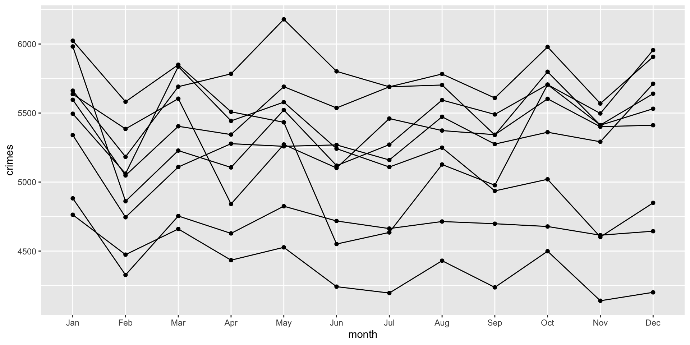
Think about what the aesthetic (i.e. aes) function is doing. It reads: for each year, draw a dot for the month and then connect the months with a line.
Although we now have separate lines by year, it is hard to see which year is which. To do this, we can add color using the color = argument. The color= aesthetic maps a variable to different colors in the plot:
ggplot( crime_monthly, aes( x = month, y = crimes, group = year, color = factor( year ) ) ) +
geom_point() +
geom_line()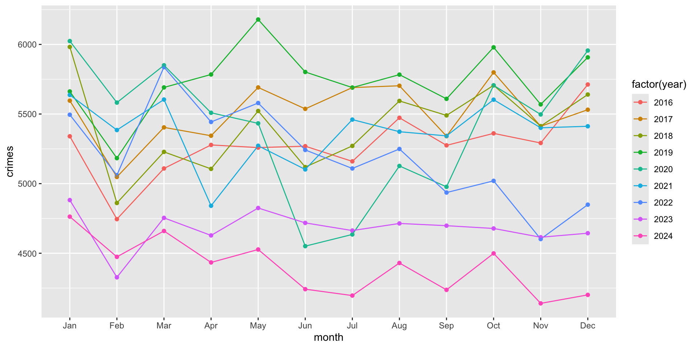
Here, we included color = factor( year ) to indicate that we want year to be converted from numeric years into categories. This is so that ggplot treats them as separate groups (rather than a continuous scale of values). To see what happens when we don’t treat year as a category, but as a continuous variable, just remove the factor() function:
ggplot( crime_monthly, aes( x = month, y = crimes, group = year, color = year ) ) +
geom_point() +
geom_line()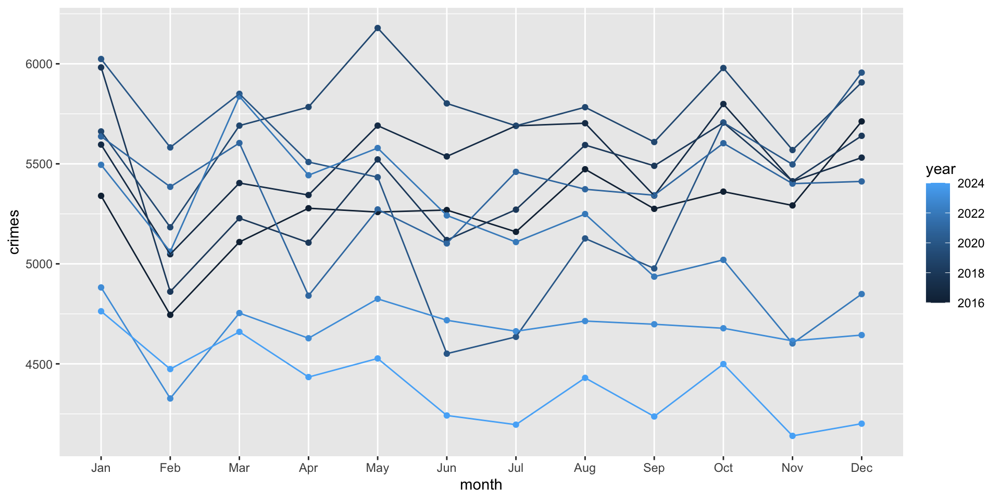
This might be helpful in some cases, but treating it as a category works better for our case.
Now, we need to update our labels. To do so, we can use the labs function which adds a new layer of labels. Let’s do it first and then walk through it:
ggplot( crime_monthly, aes( x = month, y = crimes, group = year, color = factor( year ) ) ) +
geom_point() +
geom_line() + # note that we add a plus here to tell it to add a new layer after
labs(
title = "Crime in Phoenix",
subtitle = "Monthly counts of crime by year",
x = "Month",
y = "Counts of Crime",
color = "Year"
)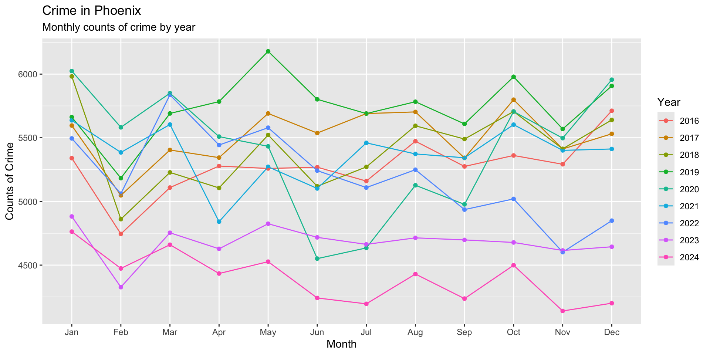
The new chunk simply adds a layer of labels for the title, subtitle, axis names, and name for the legend. To better see the change, just remove the code for labs and look and how the plot changes when the layers are removed:
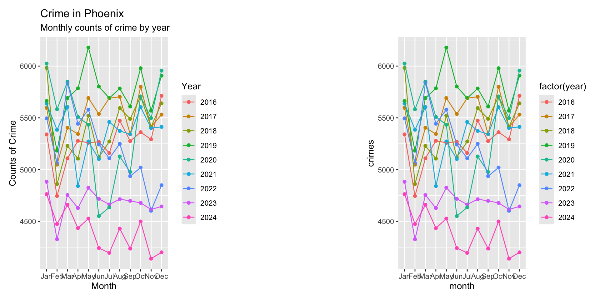
NEED EXERCISES FOR TEST YOUR KNOWLEDGE